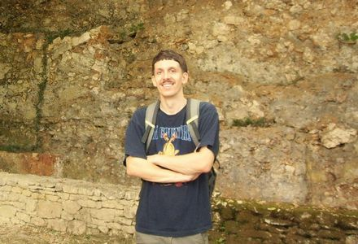
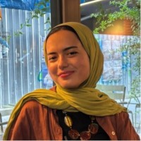

Supporting Team
Interns & Student Assistants
Students and interns who have contributed their skills and dedication to the BECACO project — supporting data work and biographical research.

👤Student
Assistant
Assistant
Raphaël Gerssen
Dec 2024 – Dec 2025
Contributed extensively to data cleaning and data preparation processes, ensuring quality and consistency of datasets integrated into the system. Conducted biographical research on actors, enriching the knowledge graph with contextual and historical information.

👤Intern
Betül Sena Ayar
Jul 2025 – Oct 2025
Worked on provenance research related to Indigenous Latin American collections held in European museums (1850–2000). Applied digital humanities methods and AI-driven approaches to data cleaning and data mining, improving data quality for cultural heritage research.

Student
Assistant
Assistant
Irene Díez García de Polavieja
Feb 2026 – Jul 2026
Worked primarily on cleaning and standardising materials across the databases, helping to ensure consistency and harmonised data records across the BECACO data infrastructure.

Intern
Noud Selten
Apr 15 – Jul 15, 2025
Contributed to both biographical research and data cleaning activities. Helped identify and contextualise individuals in the knowledge base, while his data cleaning efforts ensured consistency and usability across the BECACO data infrastructure.